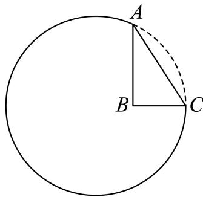

填空题
按本区原卷题号顺序排列。
黄浦 · 第1题 ★☆☆☆☆ · 教师预估
若集合A = {1, 2}，B = {1, 3}，则A ∪ B =
考点：并集定义。
难度依据：有限集合并集；并集定义
展开答案与解析
黄浦 · 第2题 ★☆☆☆☆ · 教师预估
不等式x2 − 3x + 2 < 0的解集为
考点：因式分解求解集。
难度依据：二次不等式；因式分解求解集
展开答案与解析
黄浦 · 第3题 ★☆☆☆☆ · 教师预估
椭圆 4x2+3y2=1 的焦距是
考点：由a²−b²求焦距。
难度依据：椭圆焦距；由a²−b²求焦距
展开答案与解析
黄浦 · 第4题 ★☆☆☆☆ · 教师预估
若圆柱的底面半径与高均为1，则其侧面积为
考点：侧面积公式。
难度依据：圆柱侧面积；侧面积公式
展开答案与解析
黄浦 · 第5题 ★☆☆☆☆ · 教师预估
本题资料或解析有待核事项，预览不可作为已审定成品。
(x+x1)1 6 的二项展开式的常数项为
考点：通项指数为零。
难度依据：二项展开常数项；通项指数为零
核查说明：题干展开式指数识别错误，原解析按6次处理，须核原卷。
展开答案与解析
黄浦 · 第6题 ★★☆☆☆ · 教师预估
若正数x、y满足 x+4y=1 ，则xy的最大值为
考点：消元配方或基本不等式。
难度依据：线性约束下乘积最值；消元配方或基本不等式
展开答案与解析
黄浦 · 第7题 ★☆☆☆☆ · 教师预估
从A校高一年级学生中抽取66名学生测量他们的身高，其中最大值为184cm，最小值152cm，绘制身高频率分布直方图，若组距为3，且第一组下限为151.5，则组数为
考点：由数据范围和组距计算组数。
难度依据：频率分布组距与组数；由数据范围和组距计算组数
展开答案与解析
黄浦 · 第8题 ★★★☆☆ · 教师预估
在正四面体 ABCD 中，点N是 △ABC 的中心，若 DN=λDA+μDB+νBC(λ,μ,ν∈R) ，则λ+μ+ν=
考点：由重心表示与向量基底求系数。
难度依据：正四面体中心的空间向量表示；由重心表示与向量基底求系数
展开答案与解析

黄浦 · 第9题 ★★☆☆☆ · 教师预估
若 f(x)=x3,g(x)={f(x),x≥0,f(−x),x<0 则不等 ∄∨g(x)<−x 的解集为
考点：分段求函数表达式和解集。
难度依据：分段函数与不等式；分段求函数表达式和解集
展开答案与解析
黄浦 · 第10题 ★★★☆☆ · 教师预估
i为虚数单位，若复数 z1 满足 ∣z1−1+i∣≤2 ，复数 z2 满足 ∣z2∣=∣z2+1−i∣ ，则 ∣z1−z2∣ |的最小值 为
考点：转化圆面到直线距离。
难度依据：复数轨迹间最短距离；转化圆面到直线距离
展开答案与解析
黄浦 · 第11题 ★★★☆☆ · 教师预估
一个机器零件的形状是有缺口的圆形铁片，如图中实线部分为裁剪后的形状．已知这个圆的半径是13cm， AB=8cm ， BC=6cm ，且 AB⊥BC ，则圆心到点B的距离约为 cm．（结果精确到0.1cm）

考点：三角恒等变换与余弦定理求长度。
难度依据：圆内几何测距；三角恒等变换与余弦定理求长度
展开答案与解析
黄浦 · 第12题 ★★★★☆ · 教师预估
设常数b为整数，数列 {an} 的通项公式为 an=(n+b)2+2b ，若 am+am+1+am+2 (m≥1 m∈Z ）的最小值为−7，则b＝
考点：按对称轴位置及整数约束分类。
难度依据：离散二次数列三项和最值；按对称轴位置及整数约束分类
展开答案与解析
选择题
按本区原卷题号顺序排列。
黄浦 · 第13题 ★☆☆☆☆ · 教师预估
掷一颗质地均匀的骰子，观察朝上面的点数．设事件E：点数是奇数，事件F：点数是偶数，事件G：点数是3的倍数，事件H：点数是4．下列每对事件中，不是互斥事件的为（ ）
A. E与F
B. F与G
C. E与H
D. G与H
考点：以骰子样本空间判断交事件。
难度依据：互斥事件判断；以骰子样本空间判断交事件
展开答案与解析
黄浦 · 第14题 ★★★☆☆ · 教师预估
本题资料或解析有待核事项，预览不可作为已审定成品。
若从正方体八个顶点中任取四个顶点分别记为A、B、C、D，则直线AB与CD所成角的大小不可能为（ ）
A. 30∘
B. 45∘
C. 60∘
D. 90∘
考点：分类空间方向并判断可取角度。
难度依据：正方体顶点连线夹角；分类空间方向并判断可取角度
核查说明：原解列举可实现角后直接断言30度不可能，未给穷尽证明。
展开答案与解析


黄浦 · 第15题 ★★★☆☆ · 教师预估
本题资料或解析有待核事项，预览不可作为已审定成品。
设 0≤x<2π，满足 sin(x+6π)=sinx+sin6π 的 x 的个数为（ ）。
A. 0个
B. 1个
C. 2个
D. 无数个
考点：和角变形及周期内解数。
难度依据：三角方程解的个数；和角变形及周期内解数
核查说明：源解辅助角的符号与系数表述疑似有误，须独立核查。
展开答案与解析
黄浦 · 第16题 ★★★★☆ · 教师预估
本题资料或解析有待核事项，预览不可作为已审定成品。
设函数 y=f(x) 在区间 I 上有导函数 y=f′(x)，且 f′(x)<0 在区间 I 上恒成立，对任意的 x∈I，有 f(x)∈I。对于各项均不相同的数列 {an}，a1∈I，an+1=f(an)，下列结论正确的是（ ）。
A. 数列 {a2n−1} 与 {a2n} 均是严格增数列
B. 数列 {a2n−1} 与 {a2n} 均是严格减数列
C. 数列 {a2n−1} 与 {a2n} 中的一个是严格增数列，另一个是严格减数列
D. 数列 {a2n−1} 与 {a2n} 均既不是严格增数列也不是严格减数列
考点：利用复合函数单调性及相邻项关系。
难度依据：递减函数迭代与奇偶子列；利用复合函数单调性及相邻项关系
核查说明：源解由单次奇偶项大小直接断言整个子列单调，缺少递推保持方向的论证。
展开答案与解析
解答题
按本区原卷题号顺序排列。
黄浦 · 第17题 ★★★☆☆ · 教师预估
如图，在正方体ABCD− A1B1C1D1 中，E是 BC1 的中点

(1) (6分)求证： BC1⊥ 平面CDE；
(2) (8分)求直线DE与平面ABCD所成角的大小
考点：（1）两条相交直线证明线面垂直；（2）投影求线面角。
难度依据：正方体线面垂直与线面角；（1）两条相交直线证明线面垂直；（2）投影求线面角
展开答案与解析

黄浦 · 第18题 ★★☆☆☆ · 教师预估
本题资料或解析有待核事项，预览不可作为已审定成品。
已知 ∣f(x)=sinx.
(1) (6分)求函数 y˙=f(x)⋅f(2π−x) 的最小正周期；
(2) (8分)求函数 :y=f(2x+3π),x∈[0,2π] 的单调减区间
考点：（1）倍角化简求周期；（2）复合正弦单调区间。
难度依据：正弦倍角与单调区间；（1）倍角化简求周期；（2）复合正弦单调区间
核查说明：仅修复所列OCR公式及其定界符错位；原解数学疑点和其他可渲染错识未因此消除。
展开答案与解析
黄浦 · 第19题 ★★★☆☆ · 教师预估
A校高一年级共有学生330名，为了解该校高一年级学生的身高情况，学校采用分层随机抽样的方法抽取66名学生，其中女生32名，男生34名，测量他们的身高
(1) (4分)该校高一学生中男、女生各有多少名？
(2) (4分)若从这66名学生中随机抽取两名，求这两名都是男生的概率；
(3) (6分)在32名女生身高的数据中，其中一个数据记录有误，错将165cm记录为156cm，由错误数据求得这32个数据的平均数为161cm，方差为23.6875，求原始数据的平均数及方差．（平均数结果保留精确值，方差结果精确到0.01）
考点：（1）样本比例估计人数；（2）组合计数求概率；（3）修正均值和方差。
难度依据：分层抽样、概率与方差修正；（1）样本比例估计人数；（2）组合计数求概率；（3）修正均值和方差
展开答案与解析
黄浦 · 第20题 ★★★★★ · 教师预估
本题资料或解析有待核事项，预览不可作为已审定成品。
双曲线Γ: a2x2−b2y2=1(a>0,b>0) 的左、右焦点分别为 F1(−c,0),F2(c,0)(c>0) ），过点 F1 的直线l与Γ右支在x轴上方交于点A
(1) (4分)若 a=5, ，点A的坐标为(3,4)，求c的值；
(2) (6分)若 AF2⊥F1F2 ，且 .a,b,c 是等比数列，求证：直线l的斜率为定值；
(3) (8分)设直线l与Γ左支的交点为B， c=3 ，当且仅当a满足什么条件时，存在直线l，使得∣AB∣=∣AF2∣ 成立
考点：（1）代点求焦距；（2）等比条件求定斜率；（3）焦点定义与三角形条件求参数。
难度依据：双曲线焦点弦与存在性；（1）代点求焦距；（2）等比条件求定斜率；（3）焦点定义与三角形条件求参数
核查说明：第（3）问源解推导中位置关系与充要性需要独立复核。
展开答案与解析

黄浦 · 第21题 ★★★★★ · 教师预估
本题资料或解析有待核事项，预览不可作为已审定成品。
函数y = f (x)的定义域为D，在D上仅有一个极值点x0，方程f (x) = 0在D上仅有两解，分别为x1 ⋅Λx2 ，且 x1<x0<x2 ．若 2x1+x2>x0 ，则称函数y = f(x)在D上的极值点左偏移；若2x1+x2<x0 ，则称函数 ⋅y=f(x)±D 上的极值点右偏移
(1) (4分)设 f(x)=x2−1 ，D = R，判断函数 y=f(x) 在D上的极值点是否左偏移或右偏移？
(2) (6分)设m > 0且m ≠ 1， f(x)=x3−mx2−x+m ，D = (0, +∞)，求证：函数y = f (x)在D上的极值点右偏移；
(3) (8分)设a ∈ R，f (x) = ln x − ax，D = (0, +∞)，求证：当0 <a<e−1 1时，函数 y˙=f(x)ℏtD 上的极值点左偏移
考点：（1）判断二次函数偏移；（2）导数判极值与中点比较；（3）构造对称差函数比较双零点。
难度依据：极值点偏移与零点比较；（1）判断二次函数偏移；（2）导数判极值与中点比较；（3）构造对称差函数比较双零点
核查说明：第（3）问源解导数在极值点处等于零，误称全区间严格大于零；结论需规范证明。
展开答案与解析